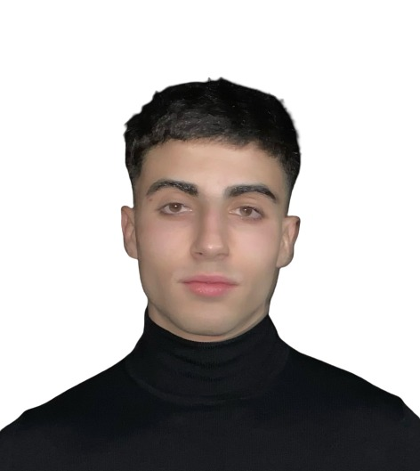

Trabajo como repartidor de Dominos Pizza pero tengo fuerte pasión por la informática y el desarrollo de software. Poseo habilidades técnicas en programación, incluyendo Java (alto), HTML (alto), CSS (alto), y un buen conocimiento de tecnologías como MySQL y SQL Server. Mi formación incluye un título de técnico informático y actualmente estoy estudiando un ciclo superior en Desarrollo de Aplicaciones Multiplataforma. Soy un apasionado de la tecnología, con habilidades lógicas sólidas y un deseo constante de aprendizaje.
Soy un comunicador eficaz y disfruto trabajando en equipo, donde puedo aprovechar mis habilidades de gestión del tiempo y adaptabilidad. Mi certificación en Responsive Web Design y mi experiencia en desarrollo de software son activos que complementan mi perfil, lo que me hace un candidato versátil y comprometido en mi camino hacia una carrera en el desarrollo de aplicaciones.